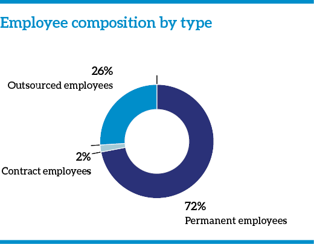
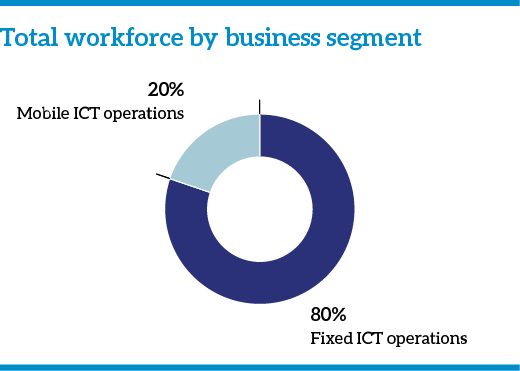
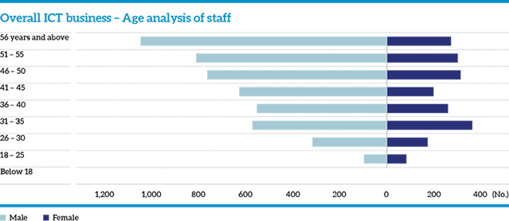
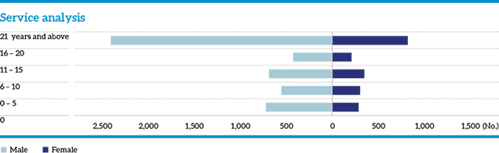
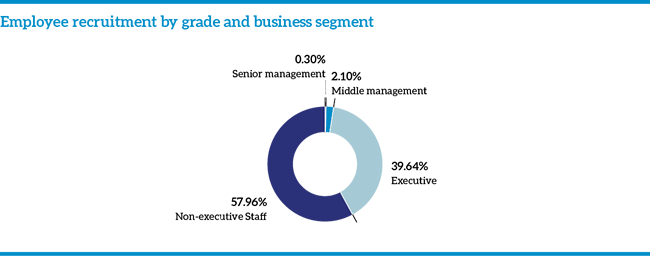
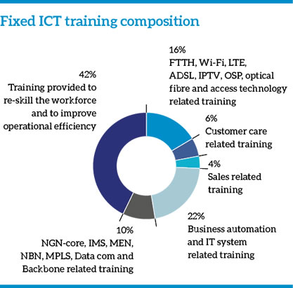
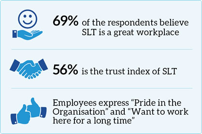

Employee capital
The working culture that persists at the SLT Group is aimed at realising our vision of becoming a “trusted partner” delivering a higher communication experience with “passion, quality, and commitment”. SLT has developed a number of HR initiatives in the area of talent management, development, diversity, and leadership to provide our team with the best possible working environment which will transform into contentment and excellence in customer service.
In the ever-changing digital world, the employee experience, expectations, and relationships are among the top challenges that we face. The telecommunication sector with its rapid pace of change has affected our employees the most. They had to experience the major technological transformation of our time: the shift from analogue to digital. The SLT Group Vision 2022 is also aligned with facing the challenges of becoming a digital services provider to our customers. In our drive to change into a DSP, our team of dynamic, dedicated individuals will be supported at every step of the way. We conduct training and awareness programmes to better manage the pace of technological advances in our sector.
SLT is committed to provide a rewarding working environment and to strengthen the value proposition by improving our employee experience in an open and transparent manner.
Workforce profile
Total workforce by employment type
| 2017 | 2016 | |||||
| Type of employment | Fixed ICT operations | Mobile ICT operations | Overall ICT business | Fixed ICT operations | Mobile ICT operations | Overall ICT business |
| Permanent employees | 5,390 | 1,147 | 6,537 | 5,684 | 1,127 | 6,811 |
| Contract employees | 23 | 189 | 212 | 31 | 31 | 62 |
| Outsourced employees | 2,148 | 196 | 2,344 | 2,204 | 268 | 2,472 |
| Total | 7,561 | 1,532 | 9,093 | 7,919 | 1,426 | 9,345 |
Note: Includes Mobitel part-time employees.


Total workforce by gender
| Type of employment | Female | Female % | Male | Male % | Total 2017 |
| Fixed ICT operations | 1,863 | 79.85 | 5,698 | 84.29 | 7,561 |
| Mobile ICT operations | 470 | 20.15 | 1,062 | 15.71 | 1,532 |
| Overall ICT business | 2,333 | 100 | 6,760 | 100 | 9,093 |
Note: Includes outsourced and part-time employees.
Analysis by gender, grade, and business segment
| Female | Male | |||||
| Grade | Fixed ICT operations | Mobile ICT operations | Overall ICT business | Fixed ICT operations | Mobile ICT operations | Overall ICT business |
| Senior management | 10 | 8 | 18 | 55 | 61 | 116 |
| Middle management | 24 | 60 | 84 | 94 | 268 | 362 |
| Executives | 285 | 297 | 582 | 564 | 533 | 1,097 |
| Non-executive staff | 1,219 | 58 | 1,277 | 3,162 | 51 | 3,213 |
| Total | 1,538 | 423 | 1,961 | 3,875 | 913 | 4,788 |
Note: Excludes outsourced employees.

Note: Excludes Mobitel outsourced employees.

Note: Excludes Mobitel outsourced employees.
Recruitment and turnover
Employee recruitment by grade and business segment
| 2017 | 2016 | |||||
| Grade | Fixed ICT operations | Mobile ICT operations | Overall ICT business | Fixed ICT operations | Mobile ICT operations | Overall ICT business |
| Senior management | 1 | 0 | 1 | 1 | 1 | 2 |
| Middle management | 0 | 7 | 7 | 0 | 3 | 3 |
| Executives | 0 | 132 | 132 | 41 | 67 | 108 |
| Non-executive staff | 1 | 192 | 193 | 149 | 0 | 149 |
| Total | 2 | 331 | 333 | 191 | 71 | 262 |
Note: Excludes SLT and Mobitel outsourced employees.

Employee recruitment by age and business segment
| 2017 | 2016 | |||||
| Age category | Fixed ICT operations | Mobile ICT operations | Overall ICT business | Fixed ICT operations | Mobile ICT operations | Overall ICT business |
| Below 18 | 0 | 5 | 5 | 0 | 0 | 0 |
| 18-25 years | 0 | 227 | 227 | 37 | 34 | 71 |
| 26-30 years | 1 | 77 | 78 | 59 | 28 | 87 |
| 31-35 years | 0 | 17 | 17 | 47 | 7 | 54 |
| 36-40 years | 0 | 5 | 5 | 46 | 2 | 48 |
| 41-45 years | 0 | 0 | 0 | 1 | 0 | 1 |
| 46-50 years | 1 | 0 | 1 | 1 | 0 | 1 |
| 51-55 years | 0 | 0 | 0 | 0 | 0 | 0 |
| 56 years and above | 0 | 0 | 0 | 0 | 0 | 0 |
| Total | 2 | 331 | 333 | 191 | 71 | 262 |
Note: Excludes SLT and Mobitel outsourced employees.
Turnover by gender
| 2017 | 2016 | |||||
| Grade | Fixed ICT operations | Mobile ICT operations | Overall ICT business | Fixed ICT operations | Mobile ICT operations | Overall ICT business |
| Female | 19 | 78 | 97 | 24 | 32 | 56 |
| Male | 26 | 75 | 101 | 31 | 47 | 78 |
| Total | 45 | 153 | 198 | 55 | 79 | 134 |
Employee turnover by grade and business segment
| 2017 | |||
| Grade | Fixed ICT operations | Mobile ICT operations | Overall ICT business |
| Senior management | 0 | 1 | 1 |
| Middle management | 0 | 11 | 11 |
| Executives | 9 | 55 | 64 |
| Non-executive staff | 36 | 86 | 122 |
| Total | 45 | 153 | 198 |
Note: Excludes outsourced employees.
Occupational health and safety – Fixed ICT
| No. of Injuries 2017 | |
| Female | Male |
| 3 | 5 |
Training and development
Focusing on the key priorities of our strategic road map in transforming into a digital service provider, SLT continued to strengthen the skill and talent development of our staff in 2017. Employee training opportunities are essential to the growth of the Company and it will also be beneficial to employee retention and loyalty. At SLT, we provide a combination of formal training, on-the-job experiences, and regular feedback from managers. Our appraisal system helps us identify the areas that need more focus. Training is conducted at an individual level as well as at departmental level.
In 2017, a total of 122,149 hours of training were conducted for our workforce. Over 52,000 hours were spent on introducing new skills to improve operational efficiency. To facilitate the digital transformation under Vision 2022, we hope to train and re-skill our existing workforce. Over 26,000 hours were spent on business automation and IT system related training and an additional 20,000 hours were spent on FTTH, Wi-Fi, LTE, ADSL, IPTV, OSP, Optical Fibre and access technology related training.
There were also a total of 109 foreign training programmes conducted during 2017. They included technical training as well as conferences, workshops, seminars, forums etc. Our team was afforded valuable opportunities to gain experience on a wide array of fields through these foreign programmes.
Fixed ICT training composition
Each year, we allocate a significant portion of our budget for training and development. We possess four training centres, supplemented with a team of dedicated staff, to carry out these programmes. SLT conducts most of its training programmes using internal and local resources.


Mobile ICT training composition
SLT Mobitel continues to encourage and support a learning culture among staff from the time of joining where the recruits are given a debrief of SLT and its culture followed by a formal induction and orientation with the participation of Senior Management and HR to provide more insights into the operational aspects of the Divisions.
We encourage and support our employees to gain professional qualifications and join professional bodies as members, after the completion of a minimum period of employment. Opportunities are also provided for enrollment in seminars, conferences, workshops, and customised trainings periodically dependent upon its relevance and priority. Employees are selected according to the Training Needs Identification process or on need basis to cover changes in technology.
An Executive Development Programme (mEDP) was launched in 2017 to develop executive staff cross-functionally. A platform for sharing knowledge online is available via the intranet.
Product awareness and Customer Service Excellence trainings are conducted by Marketing, Sales and Customer Care staff periodically. Further, we join with leading universities, professional institutes, technical colleges, and recognised institutes in providing internships and work experience opportunities to undergraduates.
Local training: Mobile ICT
| Subject area | Total hours | % |
| Business English | 2,193 | 19 |
| CCNA routing and switching | 2,048 | 17 |
| Decision-making | 408 | 3 |
| Executive development programme | 1,524 | 13 |
| Lightning protection | 288 | 2 |
| Negotiation skills | 200 | 2 |
| Oracle ERP training | 864 | 7 |
| Teambuilding | 1,136 | 10 |
| Train the trainer | 333 | 3 |
| Customer service excellence | 821 | 7 |
| Performance management | 464 | 4 |
| Mobile technologies for non-technical professionals | 220 | 2 |
| Leadership development | 1,234 | 11 |
| Total | 11,733 | 100 |
Foreign training – Mobile ICT
| Key areas of focus |
No. of
participants |
No. of
sessions |
% |
| Technical training | 93 | 25 | 32 |
| Conferences/workshops/seminars | 51 | 19 | 24 |
| Business/Vendor visits | 67 | 25 | 32 |
| Forums | 16 | 7 | 9 |
| Exhibitions | 4 | 3 | 4 |
| Total | 231 | 79 | 100 |
Training and development by grade and gender – Mobile ICT
| No. of hours of training | ||
| Grade | Female | Male |
| Senior management | 234 | 2,054 |
| Middle management | 2,240 | 10,117 |
| Executives | 2,872 | 4,099 |
| Non-executive staff | 741 | 3,296 |
| Total | 6,086 | 19,566 |
Professional support
The SLT Group lends its support to staff wishing to join accredited professional bodies. Our employees are thus affiliated with a plethora of institutions and professional bodies; both domestic and international. Our employees can equally further their professional development by following qualifications offered by these institutions; and can similarly be approved for the reimbursement of incurred costs following approval.
Exhibitions and conferences
SLT ensures that its staff attend all relevant exhibitions and conferences in the telecommunications industry and beyond. Some of the overseas events that we attended in 2017 are
The global challenges in the telecom industry are manifold and technological advances are showcased in major international events. In order to gain exposure and provide networking opportunities, SLT Mobitel team participated in major foreign and local exhibitions and conferences. The following is list of events in which SLT Mobitel participated in 2017:
Foreign
- The 10th Annual Rural Marketing Digital and Omnichannel Transformation
- 30th Law Asia Conference
- Asia Pacific Regional Conference on Operational Technologies (APRICOT), Broadband World Forum 2017
- Global Mobile Vision 2017
- Global Sources – Consumer Electronics /Hong Kong Electronics Fair
- GSMA Asia Pacific 2017
- GSMA Mobile World Congress 2017
- IoT Solutions World Congress 2017
- Oracle Open World and Tower Xchange Meetup Asia 2017
Local
- 10th Annual National Conference on Cyber Security
- 17th CIM Annual Conference 2017
- 38th National Conference of Chartered Accountants
- Bank Tech Asia 2017 Conference, National IT Conference 2017
- National Law Conference 2017
- The Institute of Internal Auditors – 7th National Conference.
Fostering knowledge
The SLT Group encourages a corporate environment that promotes learning. This begins from the very first day for new employees, with their formal induction and awareness programmes. On these occasions, we provide one-to-one knowledge on the functioning of the enterprise as a whole, as well as the combined synergies, and reciprocal relationships that drive our business forward.
We encourage our employees to further their education, and thus contribute their valuable new knowledge. An Intranet portal facilitates the disbursement of acquired information. Also, we have established a Toastmaster’s Club to encourage public-speaking and communication skills amongst our workforce.
Performance appraisal
All our employees are duly rewarded for their efforts with corresponding increases in pay and supplementary bonuses.
We target organisational strategic objectives to individuals through their departments. An individual metric is based on both an individual’s key performance indicator (KPI) and an average of targets and competencies. The ERP process leads to increased efficiency. It also aids us in being more environmentally conscious by reducing our usage of paper.
Employee relations and engagement
Employees want to be involved in their work, enthusiastic about the organisation they work for, and committed to their fellow workers. Statistics prove that employees who are engaged at work are more likely to be productive on a consistent basis. There is an intrinsic link between employee engagement and retention. Low engagement can be caused by several factors including lack of recognition by managers, poor company communication, and not being aligned with the mission of the Company. At SLT, we consider employee engagement as paramount and a strategic business objective.
We engage our employees on issues related to our strategy. Our team plays a crucial role in achieving the Group’s Vision 2022. Our employees are actively engaged in the overall strategy of the SLT Group to transform into a digital service provider. There are annual performance assessment systems which facilitate transparent evaluation. There is also a regular employee satisfaction survey conducted to better serve our team. We recognise the achievements of our team through annual award ceremonies. As mentioned above, there are local and foreign training programmes that are initiated based on career development and career progression needs. We also hold various cultural and religious events during the year. Other methods of engagement included departmental meetings, briefings, involvement in community projects, and internal newsletters.
HR blog
Our bespoke HR blog is an outlet to our employees to offer insight, comment, and suggest on any HR-related matter. The activity on the blog is continually monitored. The blog is used as a primary method of engaging directly with our employees.
Meetings
We elaborate on important decisions through meetings and memoranda. Our internal newsletter
Grievance handling procedure
There is a systematic, comprehensive mechanism in place for handling and resolving all employee grievances. We understand that handling grievances in a quick and efficient manner can lead to maintaining good employment relationships, prevent small issues escalating, and ensure a healthy, productive working environment. Any issue can be reported to supervisors or line managers, which will consequently be brought to the notice of the HR department. If a supervisor or manager is related to the matter, the employee can directly contact the HR department. The HR department will respond promptly and handle the issue objectively, fairly, and confidentially. Appropriate measures will be taken to correct the issue under concern, to the benefit of all invested parties.
Whistle-blowing policy
Our detailed whistle-blowing policy allows employees to safely and anonymously report on any acts of misconduct that they may witness or be the victim of.
Employee recognition
We are continuously committed to recognising our employees’ efforts. We hold an Annual Quality Award Ceremony to felicitate the winners of 5S Implementation, QC and CI teams, ISO 9001 QMS Implementation etc. Each group possesses its unique evaluation framework to identify outstanding performance. Corresponding annual award ceremonies (Service Excellence awards, Sales awards, etc.), are then conducted to reward the nominees. In the coming years, we aspire to organise a more elaborate awards ceremony to recognise, amongst others, the long-standing employees of SLT who have shown their dedication for over twenty-five to thirty years.
Benefits and welfare initiatives
Welfare initiatives and employee well-being contribute greatly to creating an engaging working environment, while various benefits provide employees with an additional incentive. The SLT Group offers a range of benefits and effective welfare initiatives to our employees. These activities focus on improving the work-life balance of our employees. Throughout the year, we organised a range of social and sporting activities, as well as voluntary initiatives. Some of these included the Telecom games, Provincial meets, and Regional awareness programmes designed to improve the relationships amongst regional staff. SLT possesses holiday bungalows in numerous locations throughout Sri Lanka. We aim to operate additional units at new locations, as well as improve the conditions of existing ones. We further grant funds for any annual divisional trips that may take place.
Some of the additional services that SLT extends to its employees are detailed below:
- Medical insurance
- Front-line staff uniforms
- Concessionary rates on phones and mobile packages
- Dongle and data connection
- Concessions on the purchase of desktop and laptop computers
- Gift vouchers for new-born babies
- Birthday vouchers and cards
- Death relief fund
- Funeral wreath
- Annual group trips
- Financial support for higher education
Employee satisfaction
Employee satisfaction is essential for an organisation to achieve and sustain themselves if they want to remain competitive. We conduct employee attitude surveys that provide our team with the opportunity to give confidential feedback, to measure job satisfaction, and to identify particular organisational issues, opinions and attitudes. We believe that having an overall picture of the needs, pain points, and wants of our employees can be a key catalyst for driving organisational change.
Every year the SLT Group conducts an employee satisfaction survey with the assistance of Great Place to Work. This is a global research, consulting, and training firm operating in more than 46 countries, that helps organisations identify, create and sustain great workplaces through the development of high-trust workplace cultures.
The following are the results of the “Employee satisfaction survey” conducted by Great Place to Work Institute in 2017.

Health and safety
SLT is committed to create a safe, healthy working environment. We understand that poor safety standards affect the working experience of our employees. We have systems set up in place to assess and minimise risks that may impact health, safety, or welfare of our employees in the workplace.
Our Health and Safety Division bears responsibility for upholding all health and safety standards of SLT. Health and Safety Division was operating chiefly at headquarters, communicating to employees through circulars and memoranda. To further their efforts, SLT plans to increase their coverage to regional and outstation employees. For as far as safety is concerned, we understand that most workplace-related accidents occur at the regional and outstation level.
Health and safety policy
Objective
The objective of this policy is to ensure that all employees are provided a safe and healthy work environment. We wish to eliminate all workplace accidents as well as any health issues.
Goals
The following will be achieved:
- Negating any health or safety-related risks pertaining to work. The elimination of workplace accidents and issues of work-related illness.
- Engage and enlighten employees on everyday health and safety issues. Distribute advice and recommendations on workplace health.
- Effectuate emergency procedures as appropriate. (For example, evacuation in case of a fire).
Campaign trail
We have launched numerous supplementary campaigns to increase awareness on individual well-being and healthy lifestyle solutions amongst employees.
Web publication
The results of the programmes conducted by medical professionals at SLT were published on the corporate website for the convenience of employees who could not attend these sessions. These will be backed by audio content for further clarifications.
Fire and safety
To guarantee the safety of employees and our assets, we conduct a regular fire assessment on our premises. In line with this, we identify any improvements that could be made to our infrastructure. We also devise emergency response plans, and carry out practice evacuation drills for the benefit of all employees.
Health and safety for engineering staff
All engineering staff are made aware of health and safety protocols through distributed manuals supplemented with continuous training programmes.
Storage practices
All items that are utilised on our premises are stored as recommended, as detailed in the guidelines established by the Inventory Management Practices Policy.
Slips and trips
We ensure that our premises are meticulously maintained to guarantee that there are no surfaces which could pose the threat of injury to any individual.